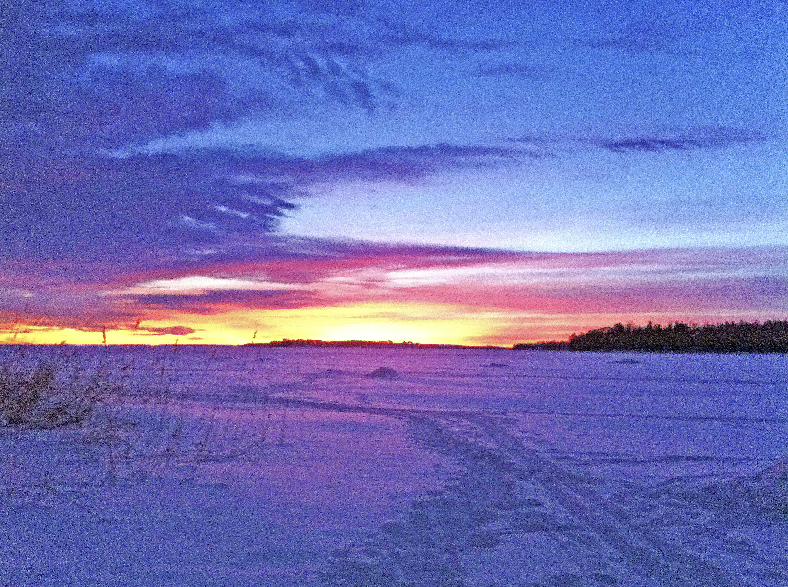

Assignments
fix 1
The picture was overexposed, so what I did was convert it to a smart object and then used Shadows/highlights
=>> I've put down the level of shadows to 0 and
=>> the level over highlights to 55 coz I wanted the trees on the outside to have a little bit of texture
Fix 2

The picture was underexposed, I have used Shadows/highlights, exposure, levels and curves.
Fix 3
Fixed the RAW version of the image before doing the retouch on photoshop; I have used the usual suspect tools to give the image a natural look; as it appears to me.
Fix 4
The image is in a horrible condition, I really doubt even if a professional photoshop wizard could find a way to fix it. I ahev tried using so many tools, but still out of accomplishing the intended final result.
Fix 5
I have used the patch tool to remove the sticker and used the gredient tool to make the color resemble to the table then touched the whole part by using bright/contrast and curves.